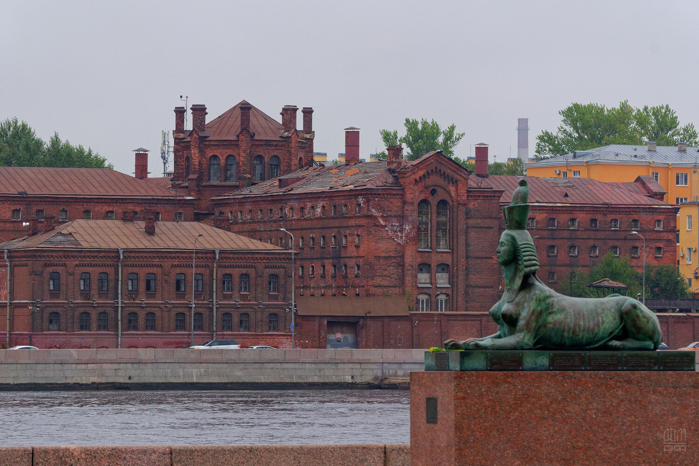
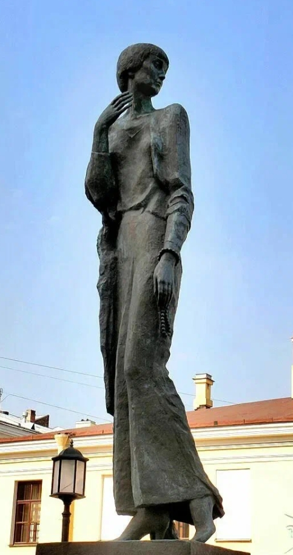

«Реквием» — поэма, ставшая прозой
Поэма «Реквием» создавалась Ахматовой в период с 1935 по 1940 год. Непосредственным толчком к её написанию послужил арест сына, Льва Гумилёва, но по замыслу автора поэма выходит далеко за пределы личной трагедии. Ахматова назвала её посвящением «тем, кто погиб в застенках» и «тем, кто стоял в очередях».
Как вспоминала сама Ахматова в прозаическом примечании к поэме (1960-е годы), в течение 17 месяцев она регулярно приходила в ленинградскую тюрьму «Кресты» с передачами для сына. Однажды женщина, стоявшая за ней в очереди, узнала её и спросила: «А это вы можете описать?». Ахматова ответила: «Могу». Этот эпизод считается точкой отсчёта работы над «Реквиемом». Текст поэмы нельзя было записывать — рукописи могли быть обнаружены при обыске. Ахматова держала строки в памяти и читала их вслух доверенным лицам, которые также заучивали их наизусть. Бумажные записи немедленно сжигались. Благодаря этой конспирации оригинальный текст «Реквиема» сохранился.
Поэма не публиковалась в СССР при жизни автора. Впервые она была полностью опубликована в Мюнхене (Германия) в 1963 году. В Советском Союзе отдельные фрагменты появились в 1986 году, а полностью поэма была напечатана в журнале «Огонёк» в 1987 году (№ 17).
«Реквием» состоит из десяти глав, пролога и эпилога. В отличие от ранней лирики Ахматовой, здесь отсутствует сложная метафорика и изящная рифма. Стих максимально приближен к разговорной речи, что создаёт эффект документальности.
Характерные черты прозы в «Реквиеме»: диалоги (глава «Приговор» строится как диалог между матерью и конвоиром, между матерью и сыном); сцены (каждая глава может быть прочитана как самостоятельная новелла или сцена, например сцена прощания с сыном перед арестом, сцена в очереди); повествование от первого лица (вся поэма написана от лица матери, потерявшей сына, что роднит её с жанром исповеди или мемуаров); документальность (описания тюремных процедур, очередей, разговоров современников основаны на личных впечатлениях Ахматовой и могут рассматриваться как исторический источник).
Исследователи (например, в статье Д. Грицаенко и В. Есипова «Шаламов и Ахматова: почему не получился разговор?», журнал «Знамя», 2023) отмечают не только тематические, но и структурные параллели между «Реквиемом» и «Колымскими рассказами» Варлама Шаламова. Оба автора стремились к максимальной документальности, оба избегали художественного вымысла, оба писали «по горячим следам» пережитого. Александр Солженицын в «Архипелаге ГУЛАГ» использовал другой метод — обобщение и систематизацию тысяч свидетельств. Ахматова, напротив, сосредоточилась на одной женской судьбе, сделав её символом миллионов. Несмотря на различия в жанре, все три автора внесли вклад в создание свидетельской литературы о сталинских репрессиях.
«Уводили тебя на рассвете, / За тобой, как на выносе, шла, / В тёмной горнице плакала, / Или с дочкой прощалась моей».
Анализ структуры «Реквиема» и её связь с прозой
| Часть поэмы | Краткое содержание | Жанровые признаки прозы |
|---|---|---|
| Пролог | «Это было, когда улыбался только мёртвый, спокойствию рад». Экспозиция: описание атмосферы страха. | Введение в обстановку, создание настроения. |
| Глава «Приговор» | Арест, прощание с сыном. | Диалог, сцена, прямая речь. |
| Глава «Клятва» | Мать клянётся выжить и дождаться сына. | Внутренний монолог, поток сознания. |
| Глава «Смерть» | Гибель надежды, переход от личного к всеобщему. | Повествование от первого лица, психологизм. |
| Глава «Распятие» | Библейские параллели: Мария у креста и мать у тюремной стены. | Метафора, переходящая в реальную сцену. |
| Глава «Допрос» | Диалог матери со следователем. | Прямая речь, психологизм, элементы детектива. |
| Глава «Кресты» | Название тюрьмы. Описание очереди. | Зарисовка с натуры, репортаж. |
| Глава «Памяти друга» | Посвящение подругам, разделившим трагедию. | Мемуарное отступление. |
| Эпилог | «Я была тогда с моим народом...» | Историческое обобщение, итог. |

